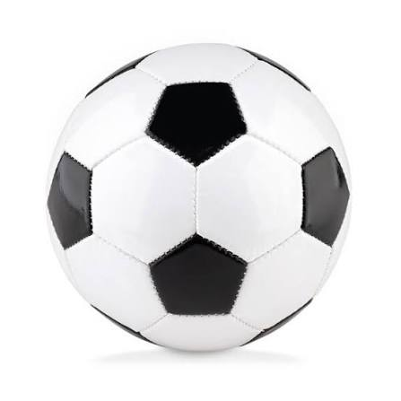

Voetbal
Voetbal is mijn favoriete sport om te beoefenen. Het is een sport dat meestal met 11 tegen 11 wordt gespeeld. Het doel is om de bal in het doel van de tegenstander te krijgen.

VoetbalVoetbal is mijn favoriete sport om te beoefenen. Het is een sport dat meestal met 11 tegen 11 wordt gespeeld. Het doel is om de bal in het doel van de tegenstander te krijgen.

Voetbal